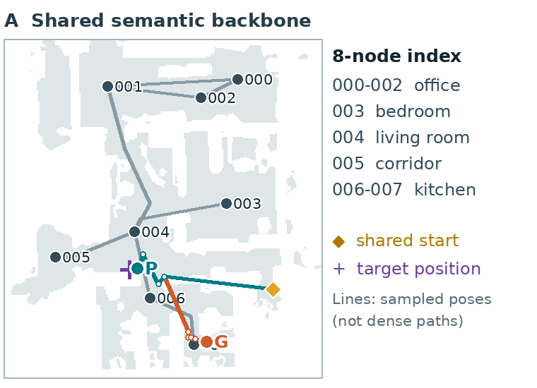
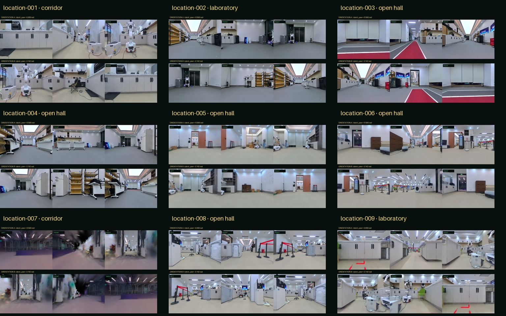

Build
Extract sparse observation nodes and candidate connectivity from traversability.
Semantic topology · skill orchestration · hierarchical verification
Topo-Harness-VLN turns dense traversability into a sparse semantic graph, ranks places jointly with target evidence, and coordinates PointGoal, ObjectGoal, grounding, and optional instruction-following backends.

System idea
Extract sparse observation nodes and candidate connectivity from traversability.
Visit backbone nodes and collect panoramic, source-grounded semantic evidence.
Order candidate nodes using place and object evidence under the task context.
Check runtime, skill progress, and global completion before moving on.
Semantic backbone
Nodes come from traversability rather than arbitrary Euclidean proximity. Each node stores place, function, objects, landmarks, affordances, confidence, and provenance.
Joint ranking
The system uses place and object evidence to order search nodes, then replans as new observations arrive.
Harness
Typed skill contracts and hierarchical verifiers connect visual reasoning to recoverable, geometrically feasible motion.

Evolving evidence
The geometric backbone and initial node semantics remain stable while grounded observations can be linked to nodes. Cross-task retrieval and efficiency gains are future evaluation targets, not claims of the current study.
The present 250-run study resets memory between episodes and does not test amortized reuse.
One-scene paired study
| Policy | Valid completion | Invalid stop | No completion |
|---|
Every percentage uses the same 50 tasks per policy. G orders the shared fixed graph by distance; P ranks by place, O by object, and J jointly by place and object. J−V keeps joint ranking and structural/safety checks but omits the semantic Finish verifier; J includes it. All policies retain visual ObjectGoal execution. External terminal-RGB review applies the literal place-and-object instruction. The scene has nine reused physical targets; these are selected stress cases, not a cross-building benchmark. P/O mask cues at initial ranking, while later replanning still sees the full instruction. Skeleton extraction, panoramic scanning, and cross-task memory gains are not isolated by this comparison.
Paired episode evidence
Each visual pairs one instruction with the frozen eight-node map, common start, target reference position, sampled observation poses, and terminal RGB. Lines connect sparse saved poses; they are not full controller trajectories. Select an image for a full-resolution view.